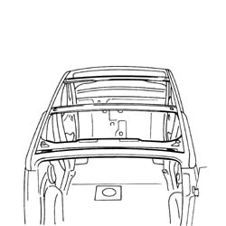
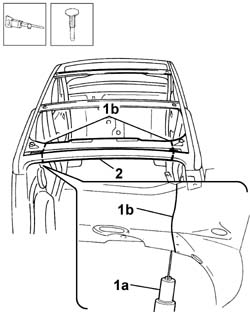
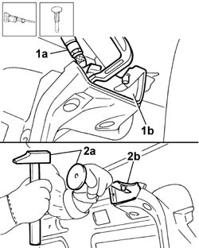
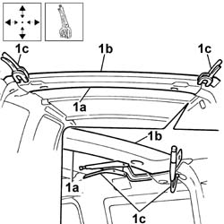
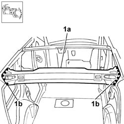

7210L88 R.R. ROOF PANEL REAR CROSSMEMBER
- Path
- Procedures > 72 PANELS AND FRAMES > 7210 REMOVING-REFITTING > 7210L specific parts for commercial vehicle > 7210L88 R.R. ROOF PANEL REAR CROSSMEMBER
- Kind
- repair procedure (removal / refitting; the operation number is the code)
- Applies to
- all engines; all production periods
- Interactive page
- https://sloeber94.github.io/elrnDB-fDbl/en/#/2585277
Applies to: all engines; all production periods
 Removing
Removing
 Refitting
RefittingCheck if any of the connected parts are deformed by checking body alignment dimensions. Use appropriate measurement tools (reference rigs, templates or gauges).
Straighten the body if necessary.

Applies to: all engines; all production periods
1. Use a pneumatic saw (1a) to cut along the cutting line (1b) shown.
Remove the rear roof beam and place on the ground.

Applies to: all engines; all production periods
1. Use a chamfering machine (1a) to remove the weld spots at the edges (1b) of the body.
2. Using a hammer and chisel (2a), remove panel residues (2b).

Applies to: all engines; all production periods
Refitting
RemovingStraighten the edges of the body panel.
Use a grinding wheel to remove the weld spot residues on the body.
Apply electro-galvanizing paint to the parts which have been ground.
Straighten the edges of the replacement beam panel
Use a rotary brush to remove the corrosion-proofing around the edge of the parts.
Apply electro-galvanizing paint to the part edges in contact with the body.
1. Correctly position the replacement part (1a) on the bodyshell, check it is perfectly aligned with the roof (1b) and secure it using self-locking clamps.

Applies to: all engines; all production periods
1. Use a chamfering machine to spot weld the part (1a) along areas (1b) shown in the figure (on both sides).

Applies to: all engines; all production periods
Check that the welded parts are correctly positioned.
Level the spot welds using a disc grinder.
Clean the areas affected by the welding.
Apply electro-galvanizing paint to the parts which have been ground.